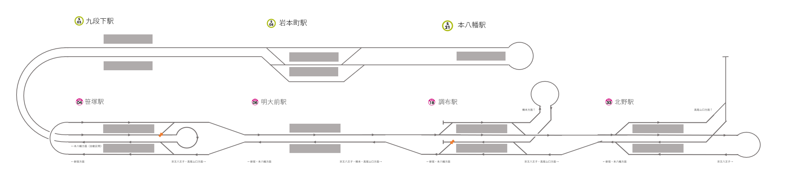

工研鉄研合同 プラレール遠隔操作体験 特設サイト
プラレール操作を遠隔で体験してみませんか？ここでは誰でも気軽に遠隔操作を行えます！！
※ほかの方が操作した動作は画面上には反映されません。ボタンを１度操作し、画面上の表示と一致させてから操作してください
本日は１０時から１９時の配信を予定しております。昨日の様子はこちらから御覧いただけます。



調布駅
明大前駅
笹塚駅
北野駅
戻る
こちらから操作できます
駅をクリック/タップしてみてください！
列車速度：